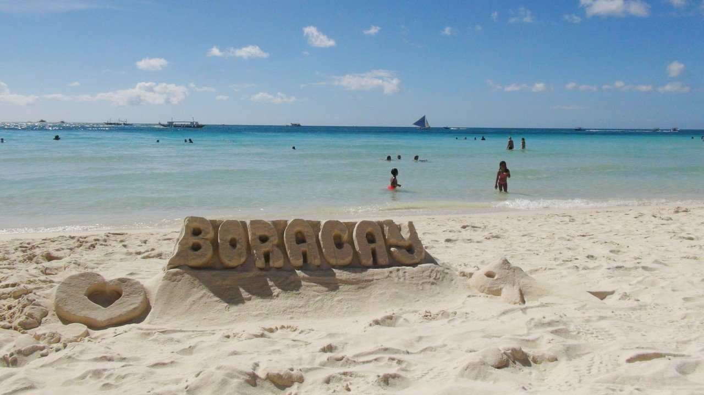

根據調查顯示，許多不肖的酒店、餐館和商店會直接將汙水排放至海水中，
畢竟長灘島沒有一個完善運作的排汙系統，導致海水中的大腸桿菌超標，
這讓許多玩水的民眾等於是直接暴露在一個危機四伏的傳染源中。

這次的封閉，除了停止所有商業活動外，也是趁著沒有遊客的時節，
重新整頓島上的硬體設施。好比說，當局設立了汙水處理系統，
在確定淨化後、無汙染疑慮的水源才會被排放至大海中。
畢竟在過去，島上多達200家飯店業者排汙並沒有受到管制──而新制規定，
凡是房間數多達50間以上的業者，必須建造自己的汙水處理池，
而房間低於50間以下的業者，而是必須將管線遷到集中的處理場中。
下一頁